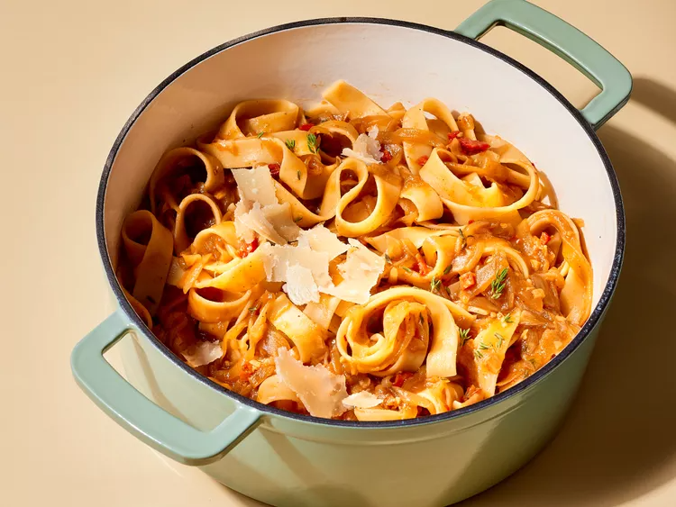

Pappardelle with Jammy Onion Ragu
Home

Recipe description
Tuscan pappardelle is a wide, egg-enriched wheat pasta usually served under a blanket of thick, rich sauce (like this caramelized onion ragù).
Ingredients
- 7 tablespoons butter, divided
- 8 cups yellow onions, halved lengthwise and thinly sliced (about 2 1/2 pounds)
- 3/4 teaspoon salt
- 4 clove garlic, minced
- 3 tablespoons tomato paste
- 1/3 cup dry white wine
- 3 cups low-sodium chicken broth or vegetable broth
- 2 bay leaves
- 1 teaspoon chopped fresh thyme, plus more for garnish
- 1/4 teaspoons crushed red pepper
- 1/8 teaspoon ground cloves
- 2 tablespoons finely chopped oil-packed sun-dried tomatoes
- 2 teaspoons balsamic vinegar
- 1/4 teaspoon freshly ground black pepper
- 16 ounces dried pappardelle or tagliatelle pasta
- shaved Parmesan cheese, for serving
Steps
-
Melt 5 tablespoons butter in a very large, deep, heavy-bottomed skillet or an 8-quart Dutch oven over medium heat. Add onions and 1/4 teaspoon salt. Toss to coat in butter. Cook, covered, stirring occasionally, until onions are tender, about 15 minutes. Increase heat to high. Cook, stirring constantly, until onions start to brown, 3 to 5 minutes.
-
Reduce heat to medium and add garlic; cook, stirring, until fragrant, about 1 minute. Add tomato paste. Cook, stirring constantly, until mixture begins to darken, 1 to 2 minutes. Add wine to skillet, then use a wooden spoon or spatula to scrape up any browned bits from bottom of pot. Simmer for 2 minutes.
-
Add broth, bay leaves, thyme, crushed red pepper, and cloves. Bring to a boil. Reduce heat to low; simmer, stirring occasionally, until liquid is reduced and onions are jammy, with just a bit of liquid at the edges of skillet, about 25 minutes.
-
While sauce simmers, cook pasta according to package directions. Drain, reserving 1/2 cup cooking water. Remove sauce from heat.
-
Remove and discard bay leaves. Stir in sun-dried tomatoes, vinegar, black pepper, and remaining 2 tablespoons butter and 1/2 teaspoon salt. Stir cooked pasta into warm sauce, adding reserved pasta cooking water a little at a time until sauce is desired thickness. Serve with Parmesan cheese and garnish with thyme.